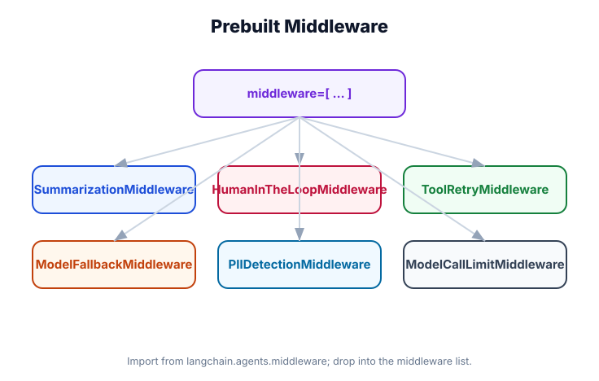

Prebuilt Middleware
What you'll learn: LangChain's prebuilt middleware: SummarizationMiddleware (prevent context overflow), HumanInTheLoopMiddleware (pause for human approval), tool retry, and PII detection — each with working configuration examples.

↗ Open full size · ⬇ Edit in Excalidraw — labels use real LangChain classes.
Automatically summarizes old messages when the conversation history approaches the model's context limit. The oldest messages are replaced with a concise summary, keeping the full context window available for new messages and tool results.
When to use: Any production agent with multi-turn conversations. Without this, long conversations will start failing with context-length errors.
from langchain.agents import create_agent
from langchain.chat_models import init_chat_model
from langchain.agents.middleware import SummarizationMiddleware
# The summarizer uses a model internally to compress old messages
summarizer_model = init_chat_model("openai:gpt-4o-mini", temperature=0)
agent = create_agent(
model=init_chat_model("openai:gpt-4o", temperature=0.7),
tools=[],
checkpointer=InMemorySaver(),
middleware=[
SummarizationMiddleware(
# Trigger summarization when context exceeds this many tokens
max_tokens=6000,
# Model used to generate the summary (can be cheaper than main model)
model=summarizer_model,
# How many recent messages to keep verbatim (not summarized)
preserve_last_n=10,
)
],
)
# Usage is identical — middleware is transparent
config = {"configurable": {"thread_id": "long-chat-session"}}
for turn in range(50): # 50 turns — no context overflow!
result = agent.invoke(
{"messages": [HumanMessage(f"Turn {turn}: Tell me something interesting.")]},
config=config,
)
print(f"Turn {turn}: {result['messages'][-1].content[:80]}...")Intercepts tool calls that match a configured pattern and pauses the agent loop, waiting for human approval before executing. The agent state is checkpointed at the pause point, so it can resume exactly where it left off after approval.
When to use: Tools that take irreversible actions — sending emails, making payments, deleting data, creating records in external systems. See Module 19 for the full Human-in-the-Loop pattern.
from langchain.agents import create_agent
from langchain.chat_models import init_chat_model
from langchain.agents.middleware import HumanInTheLoopMiddleware
from langchain.tools import tool
from langgraph.checkpoint.memory import InMemorySaver
from langchain_core.messages import HumanMessage
@tool
def send_email(to: str, subject: str, body: str) -> str:
"""Send an email."""
return f"Email sent to {to}"
@tool
def search_knowledge_base(query: str) -> str:
"""Search the knowledge base (safe — no approval needed)."""
return "Found relevant articles..."
checkpointer = InMemorySaver()
agent = create_agent(
model=init_chat_model("openai:gpt-4o-mini"),
tools=[send_email, search_knowledge_base],
checkpointer=checkpointer,
middleware=[
HumanInTheLoopMiddleware(
# Which tools require human approval
requires_approval=["send_email"],
# Optional: which tools are always safe (never interrupted)
always_allow=["search_knowledge_base"],
)
],
)
config = {"configurable": {"thread_id": "approval-session"}}
# Step 1: Agent decides to send an email, gets interrupted
result = agent.invoke(
{"messages": [HumanMessage("Send an email to boss@company.com about the Q4 results")]},
config=config,
)
# The agent is paused — check if it's waiting for approval
state = agent.get_state(config)
if state.next == ("human_approval",):
# Show the pending action to the human
pending = state.values.get("pending_tool_call")
print(f"⏸️ Approval needed: {pending}")
# Step 2a: Human approves — resume the agent
decision = input("Approve? (y/n): ")
if decision.lower() == "y":
# Resume from checkpoint
result = agent.invoke(None, config=config)
print(result["messages"][-1].content)
else:
# Reject — inject a message explaining the rejection
from langchain_core.messages import SystemMessage
agent.update_state(config, {
"messages": [SystemMessage("Email was rejected by the user. Do not send.")]
})
result = agent.invoke(None, config=config)Wraps tool calls with retry logic. When a tool raises a ToolException or a network error, the middleware retries with exponential backoff before propagating the error to the model. Reduces transient failures in production.
from langchain.agents import create_agent
from langchain.chat_models import init_chat_model
from langchain.agents.middleware import ToolRetryMiddleware
from langchain_core.tools import ToolException
agent = create_agent(
model=init_chat_model("openai:gpt-4o-mini"),
tools=[my_flaky_api_tool],
middleware=[
ToolRetryMiddleware(
max_retries=3, # retry up to 3 times
initial_delay=1.0, # wait 1s before first retry
backoff_factor=2.0, # double wait each retry: 1s, 2s, 4s
# Only retry these exception types:
retry_on=[ToolException, ConnectionError, TimeoutError],
# Never retry these tools (e.g., payment processing):
exclude_tools=["process_payment"],
)
],
)
# Your tool can raise ToolException for recoverable errors:
@tool
def my_flaky_api_tool(query: str) -> str:
"""Call an external API that sometimes fails."""
import random
if random.random() < 0.3: # 30% failure rate
raise ToolException("API temporarily unavailable — retry")
return "API result: success"Scans incoming messages for PII (credit cards, SSNs, phone numbers, email addresses) and optionally masks or blocks them before sending to the model. Logs detections for compliance. Protects against accidental data leakage to external AI APIs.
from langchain.agents import create_agent
from langchain.chat_models import init_chat_model
from langchain.agents.middleware import PIIDetectionMiddleware
agent = create_agent(
model=init_chat_model("openai:gpt-4o-mini"),
tools=[],
middleware=[
PIIDetectionMiddleware(
# What to detect:
detect=["credit_card", "ssn", "phone", "email"],
# What to do when found:
action="mask", # "mask" replaces with [REDACTED], "block" raises error
# Custom replacements:
mask_patterns={
"credit_card": "[CARD-REDACTED]",
"ssn": "[SSN-REDACTED]",
},
# Log detections to an audit log:
on_detection=lambda pii_type, value: print(f"PII detected: {pii_type}"),
)
],
)
# If user sends: "My SSN is 123-45-6789, charge my card 4111-1111-1111-1111"
# The model sees: "My SSN is [SSN-REDACTED], charge my card [CARD-REDACTED]"Combining Prebuilt Middleware
from langchain.agents import create_agent
from langchain.chat_models import init_chat_model
from langchain.agents.middleware import (
PIIDetectionMiddleware,
SummarizationMiddleware,
HumanInTheLoopMiddleware,
ToolRetryMiddleware,
)
from langgraph.checkpoint.memory import InMemorySaver
agent = create_agent(
model=init_chat_model("openai:gpt-4o"),
tools=[send_email, search_web, process_payment],
checkpointer=InMemorySaver(),
middleware=[
# 1. First: scan and mask PII before anything sees the message
PIIDetectionMiddleware(detect=["credit_card", "ssn"], action="mask"),
# 2. Second: compress old messages if needed
SummarizationMiddleware(max_tokens=8000),
# 3. Third: pause for approval on high-risk tools
HumanInTheLoopMiddleware(requires_approval=["send_email", "process_payment"]),
# 4. Last: retry transient failures on all remaining tools
ToolRetryMiddleware(max_retries=3),
],
)SummarizationMiddleware tracks which messages have been summarized. Without a checkpointer, it can't persist this tracking across turns and will re-summarize messages on every turn. Always use it with checkpointer=InMemorySaver() (or better).
When the agent pauses waiting for approval, calling agent.invoke(None, config=config) resumes it. The None input is intentional — the agent picks up from the checkpoint. If you pass a new message instead, the agent will start a new turn on top of the interrupted state, which can cause confusing behavior.
Real-World Use Case
💼 Financial Operations Agent
A financial agent that can initiate wire transfers and send reports uses: PIIDetectionMiddleware to prevent account numbers from reaching the AI model, SummarizationMiddleware to handle long audit conversations, HumanInTheLoopMiddleware for all payment tools (any transfer over $1,000 gets flagged), and ToolRetryMiddleware for bank API calls that have occasional timeouts. The whole stack is configured once on create_agent() — no changes to the tools themselves.
LangChain ships four prebuilt middleware classes. Use SummarizationMiddleware in any production multi-turn agent. Use HumanInTheLoopMiddleware for irreversible tool actions. Use ToolRetryMiddleware for network-dependent tools. Use PIIDetectionMiddleware for compliance-sensitive deployments. Stack them in the right order: PII masking → summarization → HITL → retry.